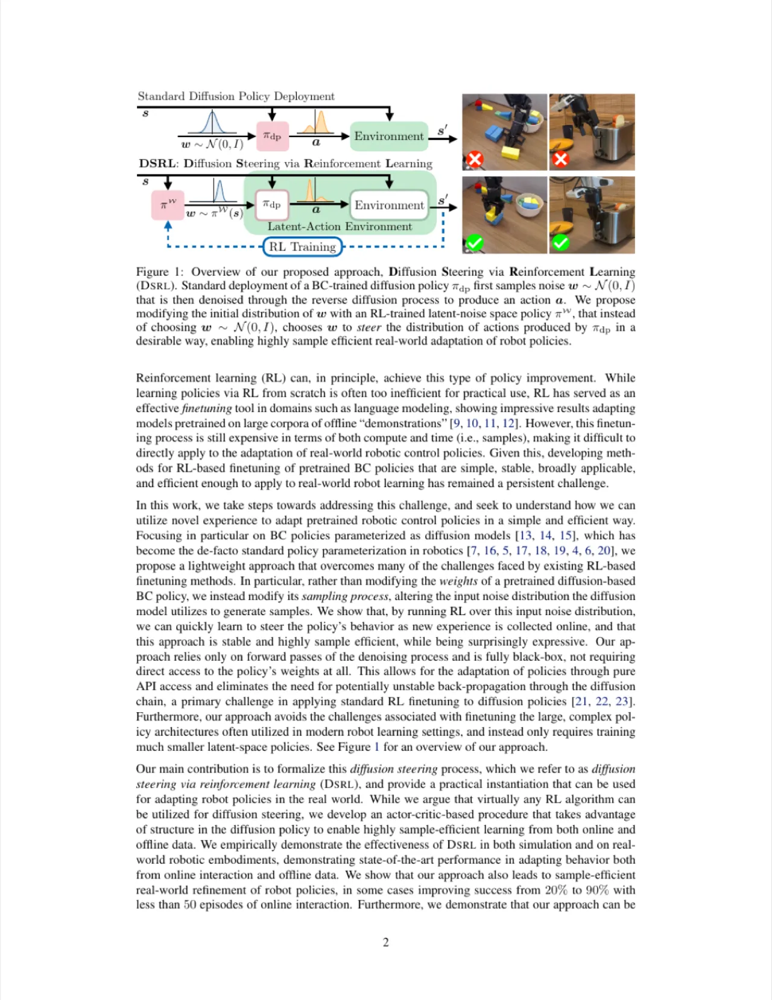
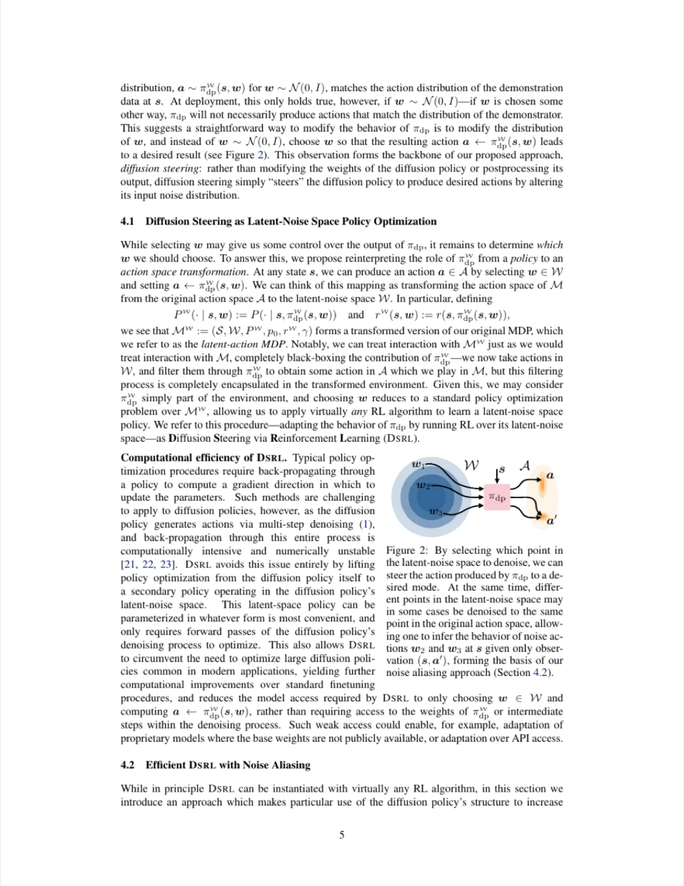
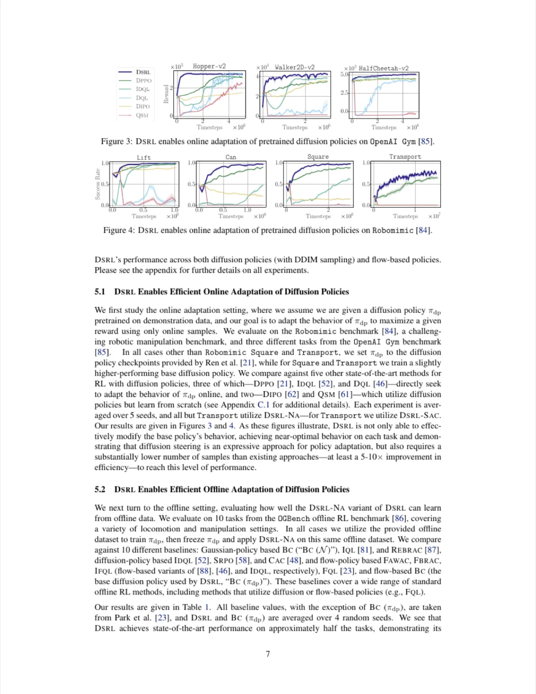
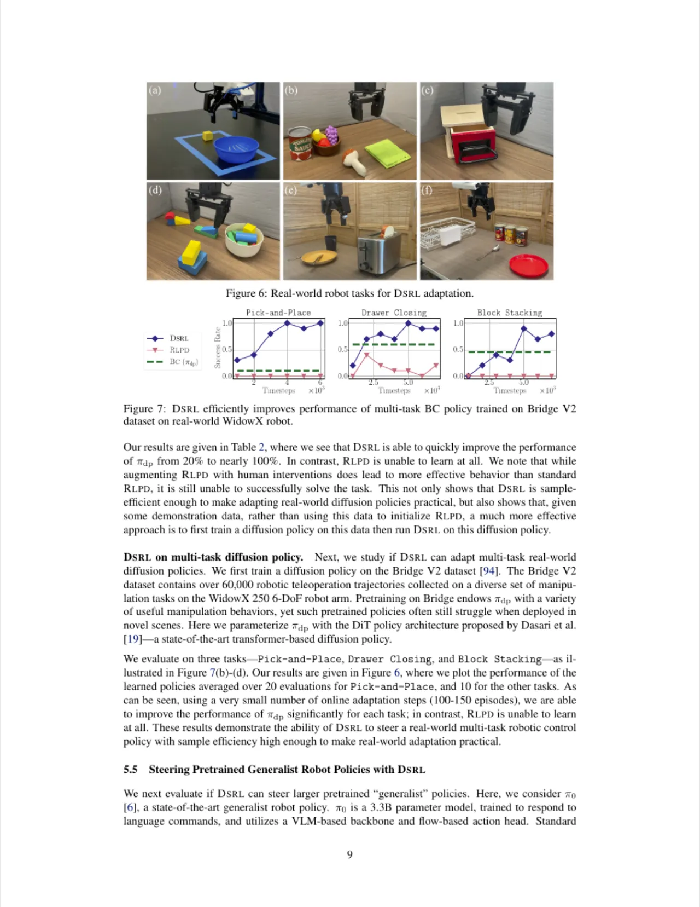
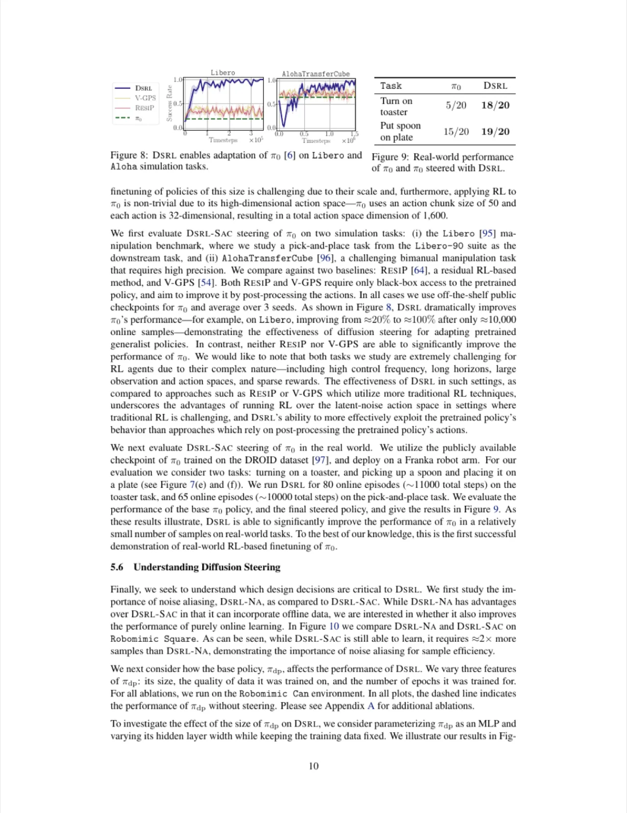

DSRL 的核心思路：不改变扩散策略权重，而是在其潜在噪声空间（latent noise space）中运行强化学习，通过学习最优的采样起点来引导预训练策略。该方法仅需黑盒访问 BC 策略，样本效率高，已在真实机器人上验证了从离线数据到自主在线改进的全流程。
扩散策略（diffusion policy）在机器人操控领域表现出色，但从 behavioral cloning（BC）训练所得的策略往往性能不足，且在真实场景中存在分布偏移。传统的强化学习微调需要对整个策略网络进行梯度更新，计算代价高昂，且在真实机器人上采集数据既危险又耗时。如何以极低成本、少量样本将预训练扩散策略适配到目标任务，是一个核心挑战。
"We propose to instead perform RL in the latent-noise space of diffusion policies, without modifying the diffusion policy weights themselves. This is simple, sample efficient, requires only black-box access to the BC policy, and enables effective real-world autonomous policy improvement."

现有工作主要分为两类局限：
DSRL 的关键洞察是：扩散策略的去噪过程完全由初始噪声 x_N 决定，只要找到合适的 x_N，就能控制最终生成的动作，而这一优化可以在远低维的潜在空间中高效完成。
DSRL 将扩散策略的初始噪声 x_N 视为 RL 的"行动空间"（action space）：给定当前观测 o，latent actor π^L 输出一个噪声向量 x_N，扩散策略以此为起点完成去噪并执行动作，环境反馈奖励用于训练 π^L。整个过程对扩散策略完全透明，只需黑盒推理调用。

给定 MDP 状态 s（包含观测 o 和任务信息），latent actor π^L(x_N | s) 输出初始噪声 x_N ∈ ℝ^Z，Z 为动作 chunk 维度。扩散策略 π^BC 以 x_N 为起点执行 N_T 步 DDIM/DDPM 去噪，生成动作序列 a^{0:H}，与环境交互获得奖励。由于不需要通过去噪链做反向传播，梯度计算代价远低于直接微调扩散权重的方法。论文表明该框架与任意 off-policy RL 算法（如 SAC）兼容。
扩散过程并非单射：不同 x_N 可能产生相同的动作（aliasing）。论文提出利用这一性质，将 x_N 的搜索空间等价压缩，避免冗余探索。此外，DSRL 提出了无噪声采样（noise-free sampling）变体：将 x_N 映射到最终动作的确定性变换（score-distillation 近似），以更少步骤完成从潜在空间到动作的转换，可将所需样本数进一步降低约 50%（论文 Section 4.3）。对于 DDIM，去噪链变为确定性过程，latent space 与 action space 间存在可微双射，理论上可用梯度方法；本文选择无梯度 RL 路径以保证通用性。
论文给出了完整的 DSRL 算法流程（Algorithm 1，Standard Diffusion Steering via Reinforcement Learning）：
论文还讨论了离线版本（Offline DSRL）：利用已有的离线演示数据（不包含噪声标注）通过逆向扩散恢复对应 x_N，从而无需任何在线交互即可完成初步适配，然后再切换至在线 RL 继续改进。
实验在三个维度验证 DSRL：(1) 离线数据适配（Franka Kitchen、D4RL、RoboMimic 等标准 benchmark）；(2) 离线-在线联合改进；(3) 真实 Franka 机器人多任务操控（pick、place、apply 等共 6 个任务）。基线方法包括：直接 BC 部署、fine-tuning 类方法（DPPO、SRPO、Cal-QL、IQL、ReBRAC）、以及 V-GPS 等引导方法。

在 Franka Kitchen 离线数据集上（Table 1，论文 p.8），DSRL 相比 BC 基线大幅提升了所有任务的成功率。以 Franka Transport 任务为例，BC 成功率为 57%，而 DSRL 达到 74%；Cal-QL、IQL、ReBRAC 等 offline RL 基线在多数任务上均不及 DSRL。值得注意的是，论文指出"we use DDIM sampling for DSRL's BC policy so that we can use the latent actor MDP"，因此与使用 DDPM 的其他基线存在采样器差异。
| 方法 | Transport (pick) | Transport (place) | Apply | 说明 |
|---|---|---|---|---|
| BC (基线) | 57% | — | — | 纯 BC 部署 |
| DSRL (离线) | 74% | 高于 BC | 高于 BC | 不修改策略权重 |
| Cal-QL / IQL / ReBRAC | 多数任务低于 DSRL | 需要修改权重 | ||
注：上表数值来自论文 Table 1，部分结果以相对趋势呈现，精确数值见原文。


论文在 Section 5.4 展示了 DSRL 可用于引导大型预训练视觉-语言-动作模型（如 π0-style VLA 策略）：在给定少量任务演示的情况下，DSRL 可从多任务通用策略的潜在空间出发，在特定任务上快速提升成功率，而无需对数十亿参数的模型做任何梯度更新。这表明 DSRL 在引导"生成式"通用机器人策略方面具有很强的实用价值。
DSRL 的优化受限于预训练 BC 策略的能力边界：若策略本身覆盖的动作空间不包含最优行为，调整 x_N 也无法生成超出策略分布的动作。论文指出："if the base policy is extremely poor, steering over its latent-noise space may be unable to discover any action which yields high reward"。此外，latent noise space 的有效性依赖于策略的 mode coverage——若 BC 策略对某类动作模式的覆盖率极低，DSRL 的优化空间也会相应受限。
DSRL 当前实现需要扩散策略支持 DDIM（确定性去噪）以建立 latent noise space 与 action space 之间的双射关系。对于使用 DDPM（随机采样）的策略，latent → action 的映射是随机的，增加了 RL 优化的方差，论文在 offline 实验中使用 DDIM 以规避此问题。这在一定程度上限制了对原始 DDPM 策略的直接应用。（部分为 inferred，基于论文 Section 4 的描述。）
DSRL 需要一个任务奖励函数。在模拟实验中，奖励通常基于 ground-truth 状态；在真实机器人实验中，论文使用了基于检测的奖励（例如物体到达目标区域）。对于更复杂、语义层面的任务，设计合适的自动奖励函数仍是一个挑战，这限制了 DSRL 在无监督场景中的直接应用。
尽管 DSRL 比直接微调策略权重更高效，论文在 Discussion 中指出，对于高维操控任务，在 latent noise space 中的探索仍需大量样本，对于完全从头学习（即 BC 策略极差）的场景，效率提升有限。论文建议的未来方向包括结合更好的探索策略和利用离线数据进行初始化。